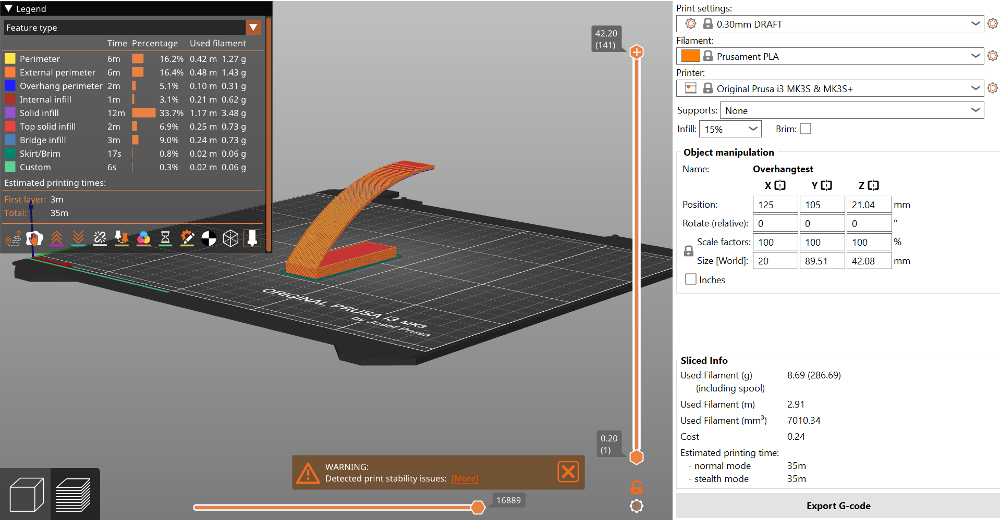
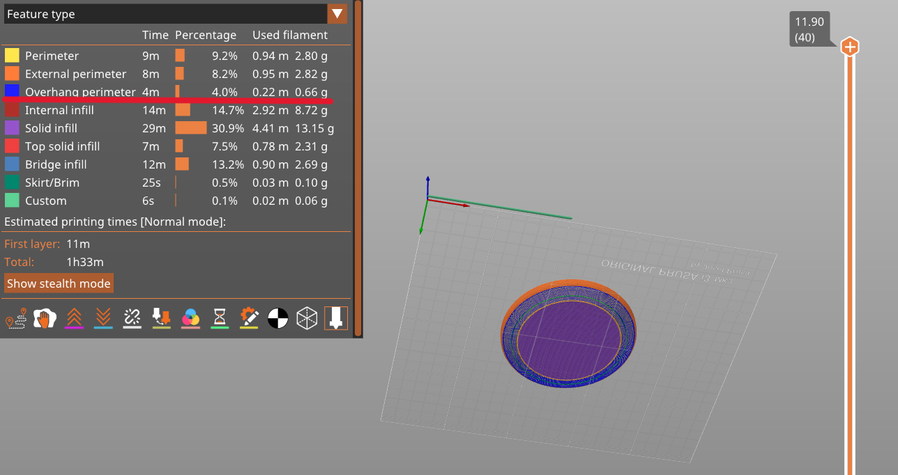
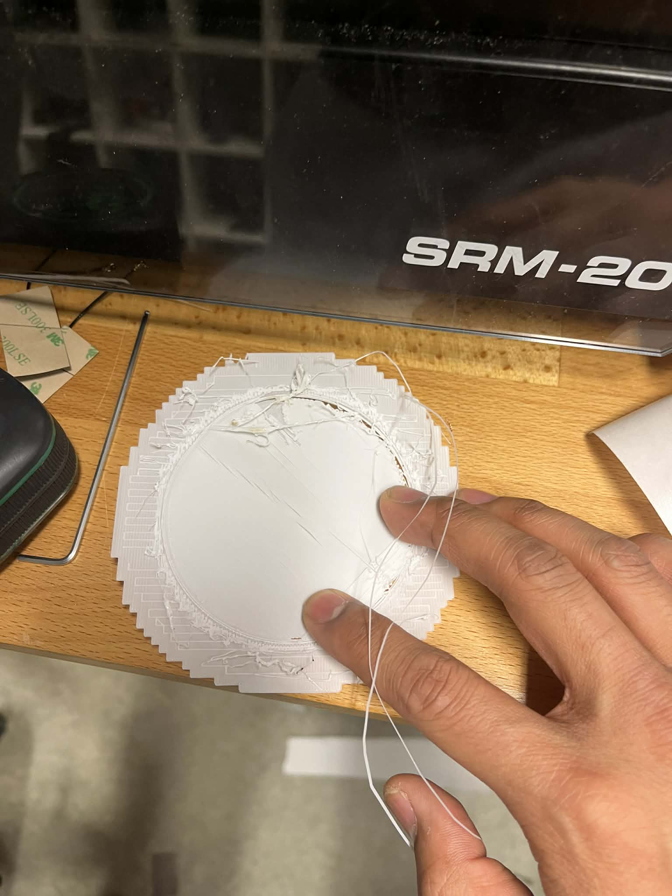
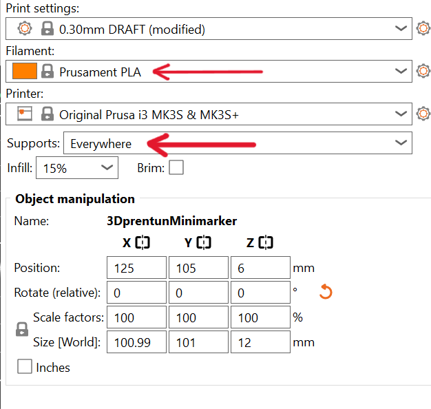
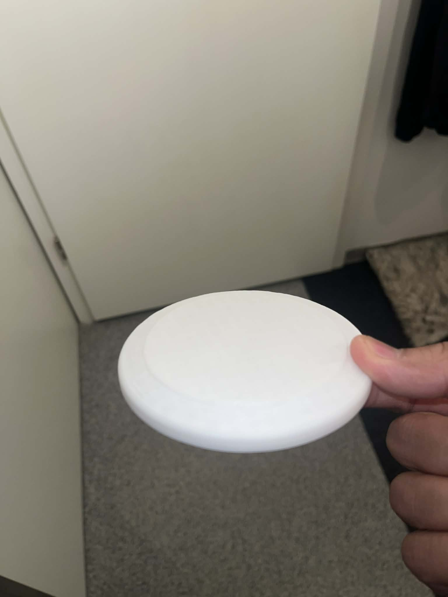
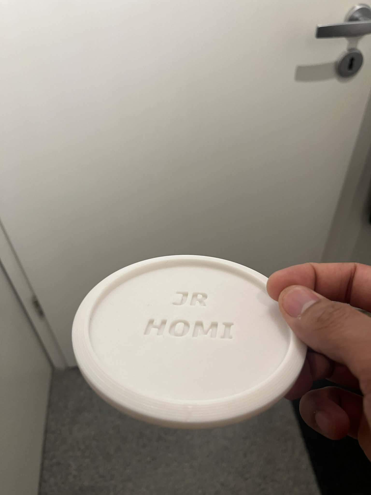
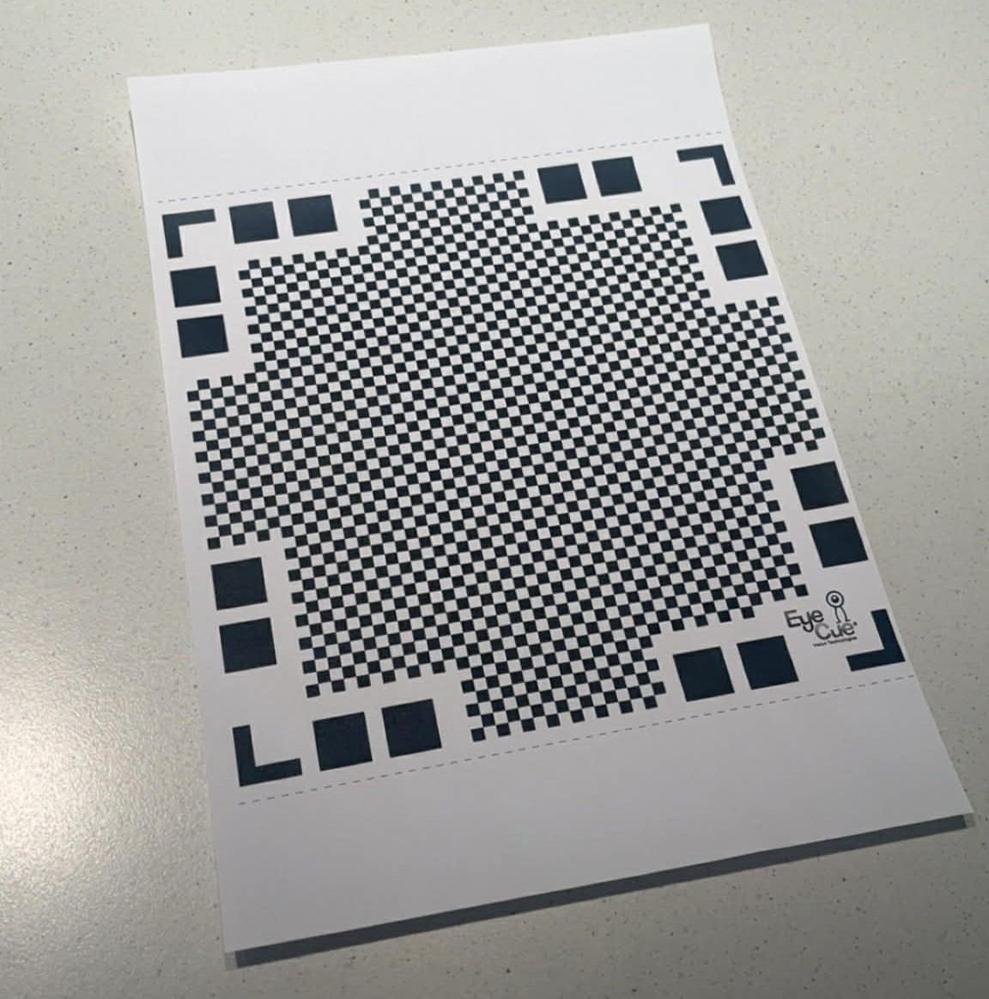
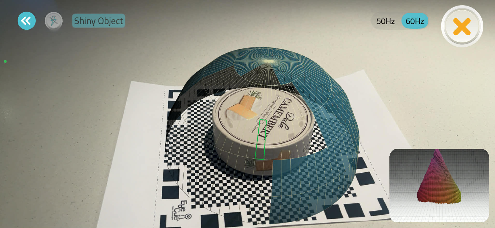

Markmið verkefnis 2 var að kynna mér tölvustuddar skurðaðferðir og nota þær í hagnýtri smíði.
Verkefnið skiptist í þrjá hluta, hópverkefni þar sem við ákvörðuðum kerf fyrir geislaskerann,
og tvö einstaklingsverkefni þar sem ég hannaði og skar út límmiða með vínýlskera og
bjó til parametrískt módel sem var skorið út með geislaskera og sett saman.
FYRSTI HLUTI - VÍNYLSKURÐUR
Ég byrjaði á því að leita að hugmyndum á netinu og valdi nokkrar myndir sem mér fannst henta vel sem límmiðar.
Til að tryggja að ferlið væri rétt framkvæmdi ég næst það sem kennt var í
kennslumyndbandi
sem ég studdist við.
Ég notaði síðan
Inkscape
til að vinna myndirnar.
Þar stillti ég þær þannig að þær hentuðu fyrir vínýlskurð,
meðal annars með því að fara í "Fill and Stroke" stillingarnar og velja No fill fyrir engin fylling,
Flat color fyrir línur og stilla stroke width um 0.020 mm í "Stroke style" svo útlínurnar
yrðu skýrar og rétt fyrir skurð.
Eftir að hafa fykta í Inkscape eins og má sjá mynd að ofan, vistaði ég skrána sem .pdf og opnaði hana í
Adobe Acrobat.
Þaðan sendi ég skrána í vínýlskerann með prentskipun,
þar sem ég þurfti að passa að hæð og breidd væru rétt stillt áður en skurðurinn hófst.
Að lokum framkvæmdi vínýlskerinn skurðinn og niðurstaðan var snyrtilegur límmiði.
Þar með var fyrsti hluti verkefnisins lokið.
Test fyrir 3D prentun
Ég og Ylja Karen ákváðum að gera stutt próf áður en minimarkerinn var prentaður,
þar sem hönnunin inniheldur overhang (útskot) og því var mikilvægt að sjá hvernig prentarinn myndi ráða við slíka lögun án þess að gæðin myndu skerðast.
Til að meta þetta prentuðum við einfalt prófunarstykki með svipuðum útskotum og í teikningunni,
þannig að hægt væri að bera saman hvernig yfirborðið og brýrnar komu út.
Eftir prentun skoðuðum við hvort útskotin héldu lögun,
hvort það kæmi sig eða gróft yfirborð undir overhang-inu,
og hvort þörf væri á stuðningi (supports).
Til að undirbúa prentunina notaði ég Prusa Slicer
sem slicer-forrit.
Ég flutti 3D módelið úr Fusion 360 inn í PrusaSlicer, valdi prentaraprófíl eftir því hvaða prentara við höfðum aðgang að
sem voru Original Prusa i3 MK3S & MK3S+ og Creality CR-10 MAX,
að lokum þurfti einnig að velja réttar prentstillingar (Print settings) , eins og má sjá á myndinni hér að neðan.

Þegar þær stillingar voru komnar á sinn stað var næsta skref að slic-a módelið og útbúa G-code, sem er skránna sem 3D prentarinn les til að framkvæma prentunina.
Eins og sjá má á myndinni hér að ofan tókst að prenta overhang prófið.
Niðurstöðurnar voru því jákvæðar og er tilbúinn fyrir næsta skref.
Finna má .3mf skrá fyrir overhang prófið
hér.
HÖNNUN Á 3D MÓDELI
Fyrir næsta skref hófst prentunin á sjálfum minimarker-num.
Þrátt fyrir að overhang-prófið hefði gengið vel kom fljótt í ljós að fyrsta tilraun á endanlegu módelinu gekk ekki upp,
þ.e.a.s.
hallinn var of brattur og efnið safnaðist þungt á jaðri hringsins,
sem leiddi til þess að prentarinn náði ekki að byggja upp lögin á hreinan hátt og prentunin misheppnaðist.
Hér er mynd af Prusa-slicer og sést að overhang perimeter er 0.66 g og external perimeter er 2.82 g sem gefur mér til kynna að nota stuðning (supports).

Í tilraun 2 brást ég við þessu með því að bæta við supports utan á hringnum til að styðja við útskotið.
Prentunin byrjaði mun betur og virtist í fyrstu ætla að takast,
en síðar kom í ljós að vandamálið tengdist einnig röngu efni.
PETG var tengt í prentaranum sjálfum, en samkvæmt prentstillingunum átti að nota PLA,
eins og má sjá á myndunum hér að neðan. Þetta hafði áhrif á festingu, lögun og heildargæði prentsins.


Eftir þessar tvær tilraunir, þar sem bæði hönnun overhang, support og efnisval var leiðrétt,
tókst tilraun 3 og minimarkerinn prentaðist vel.


Þar með er þessum hluta verkefnisins er lokið. Hægt er að nálgast .f3d og .3mf skrárnar fyrir minimarker-inn á
Thingiverse
prófílnum mínum.
3D SKÖNNUN
Ég notaði
Qlone
smáforritið úr App Store til að framkvæma 3D-skönnun.
Þegar ég opnaði forritið kom í ljós að fyrst þarf að prenta út sérstakt blað með svarthvítu mynstri sem forritið notar til að ná réttum mælingum og staðsetningu í skönnuninni.
Mikilvægt var að blaðið lægi á sléttu undirlagi og að lýsingin væri góð, svo skönnunin yrði sem nákvæmust.

Ég valdi að 3D-skanna Camembert ost, en það var svolítið tilviljun.
Einn síðdegis þegar ég var að vinna í verkefninu varð ég frekar svangur og fór að kíkja í ísskápinn — þar var lítið til að borða nema Camembert ostur.
Því ákvað ég einfaldlega að nýta tækifærið og skanna ostinn í staðinn, þar sem hann var hæfilega smár og einfaldur í lögun fyrir Qlone.

Eins og sjá má er 3D-skönnunin af Camembert ostinum ekki í fullkomnum gæðum.
Yfirborðið kemur örlítið ójafnt út, sérstaklega í kringum hringinn á pakkningunni,
þar sem formið verður ekki alveg nákvæmt.
Þrátt fyrir það gefur skönnunin góða heildarmynd af útliti og lögun hlutarins.
Með betri lýsingu, meiri nákvæmni í skönnunarferlinu eða með því að nota betri útgáfu af forritinu væri líklegt að hægt væri að fá mun fínni niðurstöðu.